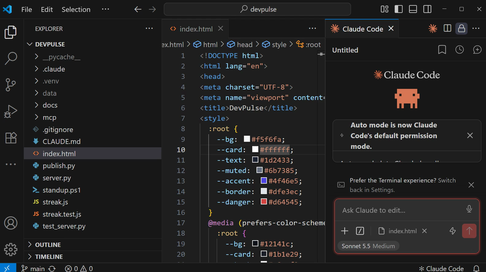
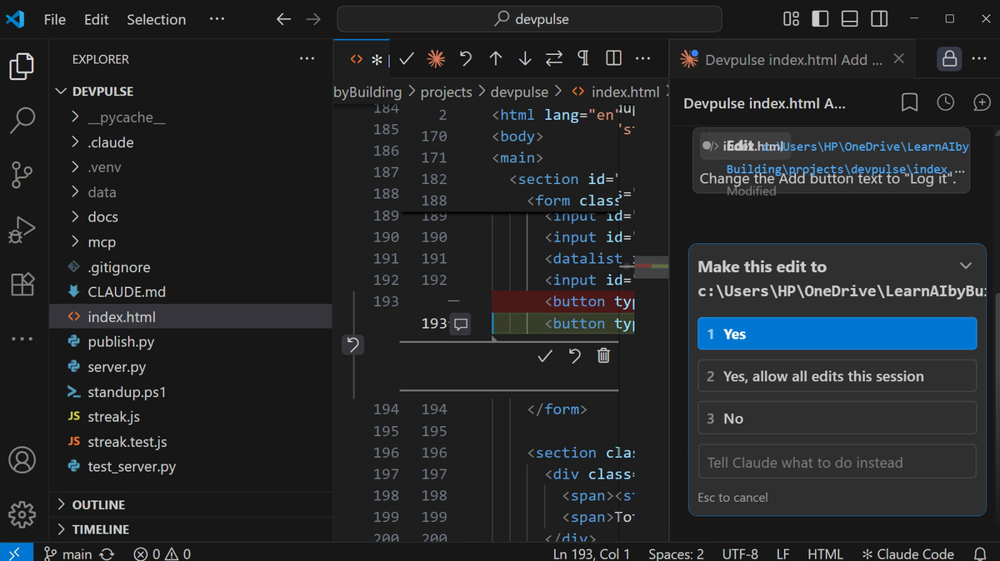
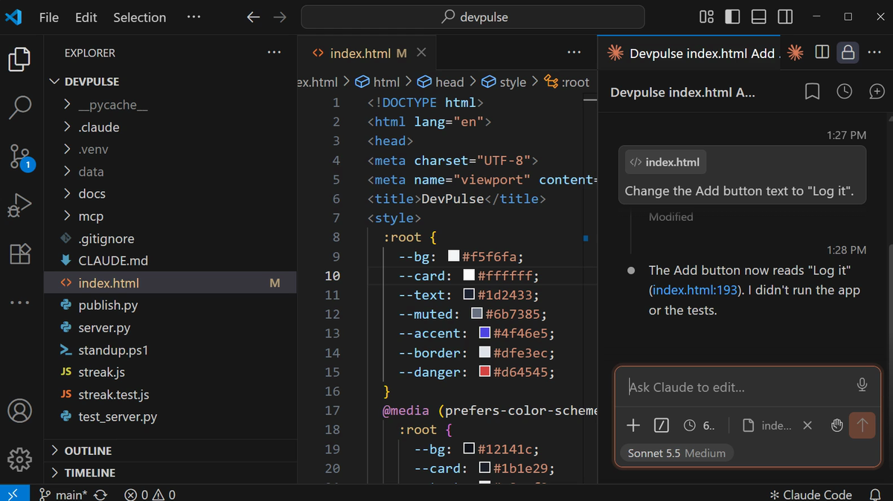
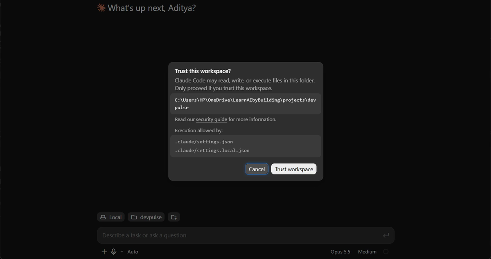
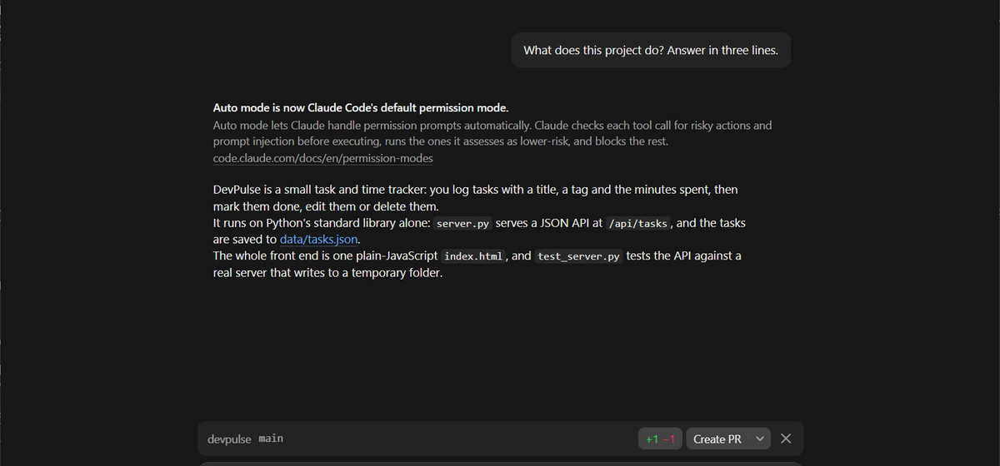
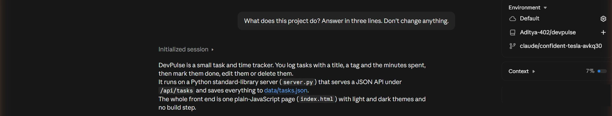

Do I always need this terminal?
Some days you are already in your code editor. Some days you would rather have a window with buttons. Some days your laptop is at home.
The terminal is one way in. It is not the only one.
Where else can you use Claude Code on DevPulse, and when is each place the better choice?
Inside VS Code
VS Code is a free code editor. Claude Code has an extension for it. Open the Extensions view, search for Claude Code by Anthropic, and install it. Then open your projects\devpulse folder in VS Code.
Open the command list and pick Claude Code: Open.

Press Shift+Tab in the panel until it asks before edits. Now every change waits for your yes.


This is VS Code's strength: you see each change in the file itself, next to the code around it.
In the desktop app
The Claude desktop app has a Code tab. It runs Claude Code on a folder on your computer, in a window instead of a terminal. Open the Code tab, choose Local, and pick your devpulse folder.

.claude/settings.json: that file holds your hooks from chapter 13.
+1 −1: the button change from VS Code, not saved in git yet.Same folder, same files, same settings. Only the window is different.
In the browser, on GitHub's copy
Open claude.ai/code. The first time, it asks you to connect your GitHub account. Then pick your devpulse repository from chapter 14.
This one is different. It does not touch your laptop. It works on the copy on GitHub, on Anthropic's computers.

claude/confident-tesla-….A cloud session puts its changes on its own claude/ branch, not on main. You read them first, then merge. And it only sees what you pushed to GitHub, not what is on your laptop.
Which one, when
| Place | Works on | Pick it when |
|---|---|---|
| Terminal | Your folder | You want every feature from this series, and scripts like chapter 8 |
| VS Code | Your folder | You want to see each change inside the file |
| Desktop app | Your folder | You prefer a window with buttons |
| claude.ai/code | Your GitHub repository | Your laptop is not with you, or the job can run while you do something else |
Your CLAUDE.md, skills and project settings live in the project folder. So they come with you to every place that opens it.
What it costs
All four places use your Claude plan. A cloud session runs on Anthropic's computers, but it counts like any other session.
And that is the series. You started with an empty folder. Now DevPulse has tests, skills, its own tools, hooks and a page on the internet. You built every part of it by asking.
Quick reference
The prompts from this chapter, ready to copy: every prompt, chapter 15.
| Command or key | What it does | Use it when |
|---|---|---|
Ctrl+Shift+P → Claude Code: Open (Mac: Cmd+Shift+P) | Opens the Claude Code panel in VS Code | You want Claude next to your code |
Shift+Tab | Changes the permission mode, for example to ask before edits | You want to see each change before it lands |
Make this edit? 1 Yes | Accepts the change shown in the inline diff | The red and green lines look right |
Desktop app → Code tab | Claude Code on a local folder, in a window | You prefer a window to a terminal |
claude.ai/code | Claude Code in the cloud, on a GitHub repository | Your laptop is not with you, or the job is long |
claude/… branch | Where a cloud session puts its changes | You review them before they reach main |
Build your own project
The goal: one small tool that you will really use, built the way we built DevPulse.
The steps: make a new folder. Start Claude Code in it and describe the tool in two sentences. Add a CLAUDE.md, tests, and one skill. Pick the place from the table that suits you best.
Guess first: which chapter's step will you need first, and which one will you skip?
One question for you: what do you do every week that a small tool could do for you?
References
Where each place and setting on this page comes from. Every screenshot is from our own recording on 29 Oct 2026, Claude Code 2.1.312.
- Anthropic · Use Claude Code in VS Code Installing the extension, opening the panel, inline diffs and accepting an edit. https://code.claude.com/docs/en/vs-code
- Anthropic · Claude Code on desktop The desktop app's Code tab, local folders and trusting a workspace. https://code.claude.com/docs/en/desktop
- Anthropic · Claude Code on the web claude.ai/code, connecting GitHub, cloud sessions and the claude/ branch they work on. https://code.claude.com/docs/en/claude-code-on-the-web
- My own recording · 29 Oct 2026, Windows 11 The same DevPulse in all three places; the web session answered from Aditya-402/devpulse on its own branch.
New chapters and episodes come out every week. Follow along on YouTube or the WhatsApp channel.